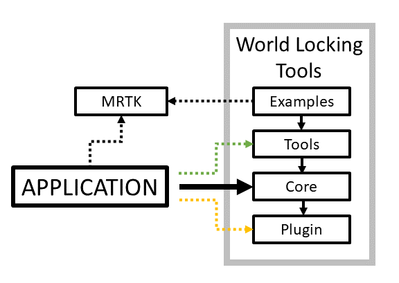

Initial setup of World Locking Tools
Supported environments
World Locking Tools for Unity currently targets UWP applications for the HoloLens family of devices. Both the original HoloLens (x86) and HoloLens 2 (ARM64) are supported.
The World Locking Tools continuous integration (CI) build validates with Unity2018.4.6f1 with Visual Studio 2017. However, extensive WLT development has also been done using the gamut of Unity2018 versions, as well as a range of Unity2019. Both Visual Studio 2017 and Visual Studio 2019 have been used in the development of the tools.
If you experience any compatibility issues with other versions of Unity and/or Visual Studio, we would love to hear about it! The best way to report any problems is through the issues portal on GitHub.
The World Locking Tools layers
World Locking Tools is broken into four layers. With the arrows pointing toward the layer depended on, the straightforward dependency graph looks like this:

The dashed lines indicate optional dependencies.
Note that while the Examples layer sometimes leverages the MixedRealityToolkit (MRTK), none of the other layers have any external dependencies, and the full functionality is available compatible with but independent of MRTK.
Further notes on the Applications dependencies follow below.
The layers may be summarized as follows:
Plugin
An imperative interface allowing direct communication with the Engine DLL. Common issues such as argument marshalling are accomplished here, as well as some composing of multiple functions frequently used in combination into composite directives. It remains a low level C# interface to the underlying C++ DLL. Its direct use is available, but generally not needed nor advisable.
Core
The Core is an encapsulation of all steps necessary for gaining the benefits of World Locking Tools' stable world-locked space, packaged into a declarative interface. A working application would be expected to ship using only functionality from the Core.
Tools
The Tools are largely diagnostic in nature. Visualizations of World Locking Tools processes are included in forms easy to add to any project which uses World Locking Tools.
Other convenient utilities are included, but are expected to be helpful in getting started toward coding up custom solutions, rather than to be final solutions as the Core offers.
Examples
The Examples layer attempts to present samples of setting up common scenarios when using World Locking Tools, as well as best practices in World Locking Tools' integration into various scenarios.
Any necessary MRTK dependencies for UX and object manipulation are restricted to the scripts and prefabs at the Examples layer. This leaves the lower layers free of any external dependencies.
Scripts and assets in the Examples layer are not expected to be integrated directly into shipping products, although there is no prohibition against it. Rather, their construction favors simplicity and clarity over reusability and efficiency.
The Application
In general the Application will need take only a dependency on World Locking Tools Core.
During development, many visualizations and other helpers for understanding unexpected behavior are available in the Tools layer. These would ideally be stripped out of a finished application, or at least disabled. Of course, they are free for other uses as well, either in their current form or modified. See the license for details.
For advanced use, as well as experimentation of World Locking Tools' full capabilities, the Plugin layer offers low level imperative access to the Engine DLL.
If access to the Plugin layer becomes necessary, it may point to a deficiency in the API surface offered in the Core layer. The World Locking Tools team is always looking to fill such gaps. Consider contributing such insights to the team. See contributing.
A warning note on installation path length
Some versions of MRTK have an issue with long installation paths. The full path length of deep subfolders in the MRTK installation can exceed the Windows path limit (260 characters). If a build error of the following form appears:
DirectoryNotFoundException: Could not find a part of the path "D:\MyOverTwentyEightCharacterLongLengthInstallPath\MixedReality-WorldLockingTools-Unity\Assets\MRTK\MixedRealityToolkit.Providers\WindowsMixedReality\DotNetAdapter\Plugins\net46\Microsoft.Windows.MixedReality.DotNetWinRT\Editor\Microsoft.Windows.MixedReality.DotNetWinRT.Editor.asmdef"
but the file is actually there on the drive, then the issue is likely the path length. The MRTK team is aware of this and is working to improve on it. In the meantime, the workaround is to shorten the path prefix by a combination of the following:
- Install the Unity project into a shorter length path root, e.g. "D:\Proj"
- If cloning the repo, clone the root of the World Locking Tools into something shorter than the default "\MixedReality-WorldLockingTools-Unity", e.g.
git clone https://github.com/microsoft/MixedReality-WorldLockingTools-Unity.git d:\MyGit\wlt
This is generally not an issue with the World Locking Tools themselves, as they don't utilize as deep a folder structure.
Adding World Locking Tools to a Unity project
World Locking Tools relies on NuGet for Unity for distribution.
To begin, make sure NuGet for Unity is installed into the Unity project. It is available from the (NuGet for Unity github releases)[https://github.com/GlitchEnzo/NuGetForUnity/releases].
If the target Unity project is the World Locking Tools project (or a derivative of it), then all necessary and optional resources are already included.
If adding World Locking Tools to an existing project, it is advisable to start with a project that has been verified to build and deploy to a HoloLens device. This will help separate issues with getting an app to run on HoloLens in the first place, which can be complicated, from issues with the World Locking Tools. Then proceed to the NuGet setup and World Locking Tools Assets sections below.
NuGet setup
Make sure the nuget.org feed is in sources. Check this in Unity > Edit > Preferences > NuGet for Unity. If not, either:
- Either use the Add New Source GUI in Unity > Edit > Preferences > NuGet For Unity to add the same share.
- Replace "New Source" with a name of your choosing (e.g. "NuGet").
- Replace "source_path" with "http://www.nuget.org/api/v2/".
- Or use a text editor to add a packagesource line to Assets/NuGet.config, e.g.
<packageSources>
<add key="NuGet" value="http://www.nuget.org/api/v2/" />
</packageSources>
After confirming the nuget.org feed, in Unity > NuGet > Manage NuGet Packages, find and install the latest version of Microsoft.MixedReality.FrozenWorld.Engine. (Search for "FrozenWorld".)
World Locking Tools Assets
Either import the required World Locking Tools .unitypackage files into the project (preferred method), or copy them in. They may be moved into a sub-folder within Assets to get them out of the way for application development.
The latest stable .unitypackage files can be found in:
https://github.com/microsoft/MixedReality-WorldLockingTools-Unity/releases
The WorldLocking.Core and Engine layer will definitely be required, so a minimal install package would be WorldLockingCoreEngine.unitypackage.
To determine what other layers might be required, see the discussion of World Locking Tools layers and their dependencies above. Each layer is contained in a single Unity package.
Note that since some of the World Locking Tools Examples use features from MRTK, a compatible MRTK snapshot is included with the Examples unitypackage. For the latest MRTK release, look here.
Adding World Locking Tools to a Unity scene
Within a Unity project containing the FrozenWorld engine (from nuget.org), import any desired World Locking Tools Assets layers (but at least WorldLocking.Core), and optionally MRTK. Then create a new scene (or open an existing scene).
Add an extra node at the root of the camera hierarchy. This node will be used to adjust the head tracked camera into world locked space. (If using MRTK, this new GameObject would be the parent of the MixedRealityPlayspace.)
The core experience
Drag a WorldLockingManager prefab from Assets/WorldLocking.Core/Prefabs into your scene. Its place in the scene doesn't matter, but it should not be in the camera tree. See a sample scene for a suggested configuration.
There are settings available on the WorldLockingManager prefab, but leaving them to their default values is recommended to get started.
See World Locking Tools Context for explanations of the options presented.
[Optional] MRTK
World Locking Tools is complementary with but orthogonal to MRTK. The use of MRTK along with World Locking Tools is entirely optional.
That said, the World Locking Tools samples are built using MRTK, and MRTK is generally extremely valuable in developing the types of MR applications that benefit most from World Locking Tools.
If using MRTK, rather than using the snapshot included with the examples, it's recommended to add the latest versions of at least the following packages:
- MixedReality.Toolkit
- MixedReality.Toolkit.Providers
- MixedReality.Toolkit.Services
- MixedReality.Toolkit.SDK
[Optional] Visualizing spongy and world locked anchors
This requires the addition of WorldLocking.Tools to the project's Assets.
If you want to visualize your anchors, drag AnchorGraphVisual prefab from Assets/WorldLocking.Tools/Prefabs into your scene. Check-boxes to toggle aspects of the visualization in the inspector are on the WorldLockingManager.
Note that, as diagnostics, the WorldLocking.Tools visualizations are not heavily optimized, and will become a drag on performance long before the core World Locking Tools processing time becomes relevant.
[Optional] A simple dashboard for parameter control within Mixed Reality
A simple HUD is available, which may be used to control the WorldLockingManager at runtime from inside MR. These are supplied in the Examples package. While they may be used as is, they are intended as patterns when building similar features into an applications own display system and UX.
Drag in the WorldLocking.Examples/Prefabs/Dashboard prefab, and point its Anchor Visualizer field to the Visualizer in the previous section.
Migrating an existing scene to World Locking Tools
The biggest change when moving to World Locking Tools is that there is no longer a requirement for using WorldAnchors to world-lock virtual objects.
WorldAnchors have traditionally been the only tool available to world-lock individual objects. But when using World Locking Tools, the coordinate space those virtual objects exist in is already world-locked. No further locking is needed.
Not only are WorldAnchors unnecessary, they won't work correctly, as they fail to take into account additional transforms up the camera hierarchy (such as the MRTK Playspace transform).
Therefore, any and all WorldAnchors should be removed from the scene, and any scripts adding WorldAnchors should discontinue doing so. The WorldAnchors don't need to be replaced by anything; World Locking Tools will anchor their targets to the real world.
If it is desirable to compare world-locking with and without World Locking Tools, then instead of removing WorldAnchors, they may be replaced with the ToggleWorldAnchor supplied in WorldLocking.Tools.
ToggleWorldAnchor works exactly the same as a WorldAnchor, with the important difference that when the World Locking Tools Manager is active, it conveniently disables itself and gets out of the way. When the World Locking Tools Manager is disabled, it behaves as a normal WorldAnchor.
If for some other reason WorldAnchors are still required in the scene (e.g. for network sharing), their can be used with an adapter, supplied as WorldAnchorAdapter.
The WorldAnchorAdapter transforms the raw position of a GameObject positioned by a WorldAnchor, into the world locked Unity global space, and then applies the transform to a target object. To use it, rather than adding a WorldAnchor directly to an object, the WorldAnchor should be applied to a proxy object (usually an otherwise empty GameObject), and then on Update() the WorldAnchorAdapter reads the pose of the WorldAnchor, transforms it correctly, and applies it to the target.
Setup complete
Having followed the above steps, the project deployed to device will run adjusted by World Locking Tools to maintain an optimally stable world-locked space. Any fixed objects placed in the scene will remain visually consistent both relative to each other and with the physical world.
Available example applications
Sample scenes, including both scripts and assets are provided to demonstrate more complex use of World Locking Tools' capabilities.
For example, the WorldLockedPhysicsSample provides a simple environment in which physically simulated objects can be created and removed, interacting with each other and with the environment (the spatial mapping).
For a more focused look at the Space Pinning feature, the SpacePin provides a much simplified example of aligning a large scale virtual object to real world features.
The RayPins expands on the capabilities introduced by the SpacePin example, allowing pinning of the virtual world to the physical world with ray tests against the spatial mesh.